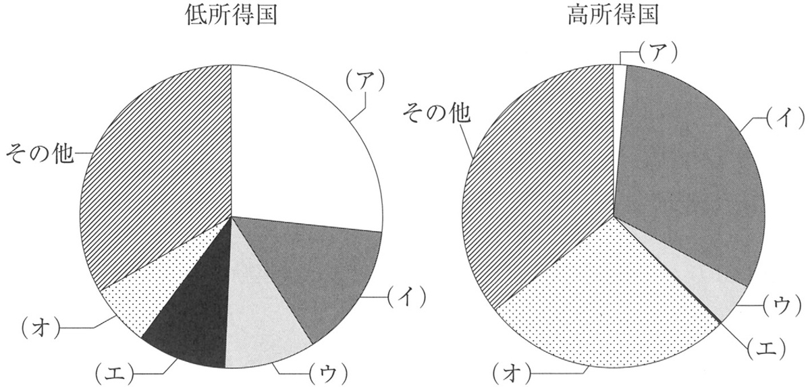

| 選択肢 | 解説 |
|---|---|
| ◯ ａ 下 痢 | ◯ 正しい。下痢性疾患は世界の5歳未満児死亡原因の上位を占め続けている——安全な水・衛生設備（トイレ）へのアクセスが乏しい低・中所得国で感染性下痢による脱水死が繰り返し起こることが背景にある——SDGsゴール6「安全な水とトイレを世界中に」や、ゴール3の具体的目標「水・衛生へのアクセス」（NO.483参照）が下痢死亡の抑制と直結しているのはこのためで、低所得国は感染症による死亡が一番多いという本章の対比軸（NCDは高所得国に多い）と表裏一体の事実である。 |
| ｂ 熱 傷 | 誤り。熱傷は不慮の事故の一因ではあるが、5歳未満児の世界的な死因として下痢性疾患・肺炎・新生児関連疾患ほどの割合を占めているわけではない——選択肢の中で唯一「事故」に分類される項目だが、本問が問うているのは感染症・衛生要因による死亡の大きさである。 |
| ｃ 白血病 | 誤り。白血病を含む小児がんは、世界的にみれば5歳未満児の死因として下痢性疾患ほどの割合を占めない——がんによる死亡は診断・治療体制が整った高所得国でも一定数みられるが、低・中所得国での感染症・栄養関連死亡の規模とは桁が異なる。 |
| ｄ 急性肝炎 | 誤り。急性肝炎（A型・E型肝炎など経口感染するものを含む）は衛生状態の悪い地域で問題となるが、5歳未満児死亡原因の中で下痢性疾患ほどの割合を占めるとはされていない——「経口感染・衛生要因」という点で下痢と同じ土俵に見えるが、疾患としての死亡インパクトの大きさが違う。 |
| ｅ 乳幼児突然死症候群〈SIDS〉 | 誤り。SIDSは主に先進国で問題視される死因で、世界全体の5歳未満児死亡原因としては下痢性疾患のような大きな割合を占めない——SIDSは「原因不明の突然死」という先進国型の課題であり、低・中所得国の子どもの死亡を押し上げているのは、むしろ予防・治療可能な感染症・衛生関連疾患である。 |
| 選択肢 | 主な発生背景 |
|---|---|
| 下痢 | 低・中所得国の衛生要因＝世界的に規模大 |
| 熱傷 | 不慮の事故の一種＝規模小 |
| 白血病 | 小児がんの一種＝規模小 |
| 急性肝炎 | 衛生要因だが規模は下痢に及ばない |
| SIDS | 先進国型の原因不明死＝世界規模では小 |
| 選択肢 | 解説 |
|---|---|
| ａ TNM分類 | 誤り。TNM分類（悪性腫瘍の病期分類）は国際対がん連合〈UICC〉が策定している分類であり、WHOが策定・公表しているものではない——「国際的な分類」という点でICD・ICFと混同しやすいが、策定主体が異なる。 |
| ｂ NYHA心機能分類 | 誤り。NYHA心機能分類（ニューヨーク心臓協会による心不全の重症度分類）は、その名の通り米国の学術団体が策定したものであり、WHOの策定物ではない——臨床でよく使われる分類だが、国際機関の公式分類とは出自が違う。 |
| ◯ ｃ 国際疾病分類〈ICD〉 | ◯ 正しい。ICD（International Classification of Diseases）はWHOが作成・改訂している、死因・疾病の統計を国際的に比較可能にするための分類である——レジュメのWHOの主要活動「④国際疾病分類〈ICD〉、国際生活機能分類〈ICF〉の作成・改訂」に直接対応する。 |
| ◯ ｄ 国際生活機能分類〈ICF〉 | ◯ 正しい。ICF（International Classification of Functioning, Disability and Health）はWHOが策定した、心身機能・活動・参加という観点から生活機能と障害を分類する枠組みである——ICDが「疾病」を分類するのに対し、ICFは「生活機能」を分類する——対になる2つの分類として、どちらもWHOの作成・改訂であることをセットで押さえる。 |
| ｅ Glasgow Coma Scale〈GCS〉 | 誤り。GCS（意識レベルの評価スケール）はグラスゴー大学（英国）の研究者らが考案したものであり、WHOが策定・公表しているものではない——臨床現場で広く使われる評価尺度だが、国際機関による国際比較のための分類とは性質が異なる。 |
| 分類・尺度 | 策定主体 |
|---|---|
| ICD（国際疾病分類） | WHO |
| ICF（国際生活機能分類） | WHO |
| TNM分類 | 国際対がん連合〈UICC〉 |
| NYHA心機能分類 | 米国の学術団体（ニューヨーク心臓協会） |
| GCS | グラスゴー大学（英国） |
| 選択肢 | 解説 |
|---|---|
| ａ 水・衛生へのアクセス | 誤り。水・衛生へのアクセスの改善はゴール6「安全な水とトイレを世界中に」の目標である——健康と無関係ではないが、SDGsの17ゴールはそれぞれ独立した番号をもち、水・衛生は健康（ゴール3）とは別枠で立てられている。 |
| ｂ 国内および国家間の不平等の是正 | 誤り。不平等の是正はゴール10「人や国の不平等をなくそう」の目標である——格差は健康にも影響しうるが、SDGsの目標体系では「不平等」という独立したテーマとして扱われる。 |
| ｃ 社会的な健康規定要因への取り組み | 誤り。社会的な健康規定要因（貧困・教育・住環境など、健康に影響する社会的条件）への取り組みは、ゴール3の下の個別の数値目標として明示的に掲げられているものではない——健康の「背景」を扱う概念であり、ゴール3が掲げる具体的な達成目標（母子保健・感染症対策・UHC等）とは抽象度が異なる。 |
| ｄ グローバル・パートナーシップの活性化 | 誤り。グローバル・パートナーシップの活性化はゴール17「パートナーシップで目標を達成しよう」の目標である——17番目のゴールは他の16ゴール全体を実現するための手段（資金・技術・貿易面での国際協力）を扱う横断的な位置づけで、健康固有の目標ではない。 |
| ◯ ｅ ユニバーサル・ヘルス・カバレッジ〈UHC〉の達成 | ◯ 正しい。UHCの達成はゴール3の下に掲げられた具体的なターゲットの1つである——レジュメのWHOの主要活動「⑦ユニバーサル・ヘルス・カバレッジ〈UHC〉の促進」と対応しており、すべての人が、適切な保健医療サービスを必要時に支払い可能な費用で受けられる状態を目指す取り組みは、健康を扱うゴール3の中核をなす。 |
| 選択肢の内容 | 該当するゴール |
|---|---|
| 水・衛生へのアクセス | ゴール6 |
| 国内・国家間の不平等の是正 | ゴール10 |
| 社会的な健康規定要因 | ゴール3の下の明示的な数値目標ではない |
| グローバル・パートナーシップの活性化 | ゴール17 |
| UHCの達成 | ◯ ゴール3 |
| 選択肢 | 解説 |
|---|---|
| ａ 遺伝要因は発症に関係する。 | 正しい記述。非感染性疾患（NCD）の発症には遺伝的な素因が関与する疾患が多く含まれる——がん・循環器疾患・糖尿病はいずれも家族歴・遺伝的背景がリスク因子として知られている。 |
| ｂ 生活習慣は発症に関係する。 | 正しい記述。喫煙・食生活・運動不足・過度の飲酒といった生活習慣はNCDの主要な発症要因であり、生活習慣病という別名が示す通りNCD対策の中心は生活習慣の改善にある。 |
| ｃ 予防は健康日本21の目標である。 | 正しい記述。健康日本21はがん・循環器疾患・糖尿病等の生活習慣病（NCD）の予防を柱の1つとする国民健康づくり運動であり、NCDの予防はその目標に含まれる。 |
| ◯ ｄ がん、循環器疾患、糖尿病の総称である。 | ◯ 誤り（これが正解）。非感染性疾患〈NCD〉は感染症以外のすべての疾患を指す幅広い概念であり、がん・循環器疾患・糖尿病「だけ」の総称ではない——がん・循環器疾患・糖尿病（および慢性呼吸器疾患）はWHOが国際的な対策の重点として掲げる代表的なNCDではあるが、それらに限定した総称という定義は誤りで、「感染症以外のすべての疾患」という定義の広さを狭く言い換えてしまっている点が本問の急所である。 |
| ｅ 社会的な環境を踏まえた対策が必要である。 | 正しい記述。NCDの発症・悪化には都市化・貧困・医療へのアクセスといった社会的環境が影響するため、個人の努力だけでなく社会的な環境整備を踏まえた対策が求められる（低・中所得国では貧困層の医療アクセスが乏しいことがNCD死亡率を押し上げる要因になる）。 |
| 選択肢 | 正誤 |
|---|---|
| 遺伝要因は発症に関係する | 正しい |
| 生活習慣は発症に関係する | 正しい |
| 予防は健康日本21の目標 | 正しい |
| がん・循環器疾患・糖尿病の総称 | 誤り＝代表例を総称にすり替えている |
| 社会的な環境を踏まえた対策が必要 | 正しい |
| 選択肢 | 解説 |
|---|---|
| ａ 世界銀行が定義している。 | 誤り。「1日1.9ドル未満で生活する」といった絶対的貧困の基準は世界銀行が定義しているが、相対的貧困は各国内の所得分布から算出される指標で、世界銀行の定義ではない——「国際機関が定義している」という言い回しに釣られて絶対的貧困と混同しないことが急所である。 |
| ｂ 生活保護を受給している世帯の状況を指す。 | 誤り。相対的貧困は世帯所得を用いて統計的に算出される指標であり、生活保護の受給の有無という制度上の区分とは別のものである——生活保護を受給していなくても等価可処分所得が貧困線を下回っていれば相対的貧困に該当し、逆もありうる。 |
| ｃ 単身世帯の相対的貧困率は母子世帯より高い。 | 誤り。母子世帯（ひとり親世帯）の相対的貧困率は、単身世帯より高いことが知られている——独力での就労収入に育児負担が重なり、等価可処分所得が貧困線を下回りやすいためである——選択肢は大小関係を逆に述べている。 |
| ｄ 世帯の大きさによらず世帯所得の高さで決まる。 | 誤り。相対的貧困は世帯所得をそのまま比較するのではなく、世帯人数で調整した「等価可処分所得」で判定する——世帯所得が同じでも世帯人数が多ければ1人あたりの取り分は少なくなるため、世帯の大きさを無視して所得の高さだけで決まるという記述は誤りである。 |
| ◯ ｅ 我が国の相対的貧困率はOECD加盟国の平均より高い。 | ◯ 正しい。我が国の相対的貧困率はOECD加盟国の平均より高い水準にある——日本は絶対的貧困状態の者はほとんどいないが、相対的貧困率は先進国の中でも高く、これは格差が拡大し低所得の世帯が相対的に多いことを意味する。 |
| 指標 | 定義・算出 |
|---|---|
| 絶対的貧困 | 世界銀行等が定める最低限の生存基準（例：1日あたりの所得基準）を下回るか |
| 相対的貧困 | 世帯人数で調整した等価可処分所得が、その国の中央値の半分（貧困線）未満か |

| 選択肢 | 解説 |
|---|---|
| ◯ ａ 感染症 | ◯ 正しい。図の（ア）は低所得国では大きな割合を占め、高所得国ではごく小さい割合しか占めない——この対比のパターンに当てはまるのは感染症である——低所得国は感染症による死亡が一番多く、対して高所得国はNCD（非感染性疾患）が死因の中心となり感染症の割合は小さくなる、という本章を貫く対比軸そのものがグラフの形として現れている。 |
| ｂ 悪性新生物 | 誤り。悪性新生物（がん）はNCDの代表例であり、高所得国で相対的に大きな割合、低所得国では相対的に小さな割合を占める——図の（ア）とは逆の分布パターンを示す——高齢化が進んだ高所得国ほどがんによる死亡の割合が大きくなる傾向がある。 |
| ｃ 心血管疾患 | 誤り。心血管疾患（虚血性心疾患等）もNCDの代表例で、高所得国で大きな割合を占める——低所得国よりも高所得国で上位にある死因として別問（NO.494）でも問われている——（ア）の「低所得国で大・高所得国で小」という分布とは逆である。 |
| ｄ 不慮の事故 | 誤り。不慮の事故は低所得国・高所得国のいずれでも死因の一定割合を占めるが、両国間でこれほど際立った差（低所得国で大、高所得国でごく小）は示さない——感染症のように衛生環境の違いによって割合が大きく変わる死因ではない。 |
| ｅ 周産期の異常 | 誤り。周産期の異常（新生児仮死・出生時損傷等）は医療体制の未整備な低所得国で高い割合を占める死因ではあるが、図の（ア）として示された最大区分には該当しない——別の区分にあたる——周産期の異常も低所得国型の死因である点は感染症と方向性が同じだが、グラフ上の区分としては別枠に描かれている。 |
| 死因区分 | どちらの所得国で大きいか |
|---|---|
| 感染症 | 低所得国で大＝（ア） |
| 悪性新生物・心血管疾患 | 高所得国で大 |
| 周産期の異常 | 低所得国で大（感染症ほどではない） |
| 不慮の事故 | 両国間で際立った差は小 |
| 選択肢 | 解説 |
|---|---|
| ◯ ａ JICA ―― 専門家派遣による技術協力 | ◯ 正しい。JICA（国際協力機構）は研修生の受け入れや専門家の派遣、機材の供与といった技術協力を実際に行う実施機関で、政府開発援助〈ODA〉の二国間協力を担う——特にアジア地域への支援が多い。 |
| ｂ UNESCO ―― 児童の福祉・健康改善 | 誤り。UNESCO（国連教育科学文化機関）が担うのは識字率の向上である——児童の福祉・健康改善はUNICEF（国連児童基金）の役割で、機関名が入れ替えられている——「児童」という言葉から連想しやすいUNICEFの事業を、あえてUNESCOに結びつける誤答パターンである。 |
| ｃ UNHCR ―― 二国間無償資金協力 | 誤り。UNHCR（国連難民高等弁務官事務所）が担うのは難民の帰還支援である——二国間の資金協力はJICA（政府開発援助の実施機関）の役割であり、UNHCRの事業ではない——「二国間」という語がJICAの仕事の連想を誘うが、それをUNHCRに貼り替えた誤り選択肢である。 |
| ｄ UNICEF ―― 政府開発援助 | 誤り。UNICEF（国連児童基金）が担うのは児童の命・権利の保護である——政府開発援助〈ODA〉は各国政府が行う国際協力活動そのものを指す枠組みの名称であり、特定の国連機関の事業内容ではない——ODAは機関名ではなく活動枠組みの名称である点にも注意する。 |
| ｅ WHO ―― 難民の帰還支援 | 誤り。WHO（世界保健機関）が担うのは保健医療活動全般である——難民の帰還支援はUNHCRの役割で、本問はcの逆向きの入れ替えになっている——aから一貫して、正しい組合せを1つずつ崩して誤り選択肢が作られている。 |
| 機関 | 正しい事業内容 |
|---|---|
| JICA | 専門家派遣による技術協力（二国間ODA） |
| UNESCO | 識字率の向上 |
| UNHCR | 難民の帰還支援 |
| UNICEF | 児童の命・権利の保護 |
| WHO | 保健医療活動全般 |
| 選択肢 | 解説 |
|---|---|
| ◯ ａ 疾病の国際的伝播を最大限防止する。 | ◯ 正しい。感染症の国境を越えた伝播を防止することはWHOの中核的な目的の1つである——レジュメのWHOの主要活動「②感染症撲滅事業の奨励・促進」「⑦国際保健規則に基づく感染症対策」（NO.492）と直結し、西太平洋地域（日本を含む）でのポリオ根絶などがその具体的な成果として挙げられている。 |
| ｂ 人道的かつ秩序ある移住を推進する。 | 誤り。人道的かつ秩序ある移住の推進は国際移住機関〈IOM〉の目的であり、WHOの目的ではない——「国際的な人の移動」を扱う機関という点でWHOと混同しやすいが、WHOが扱うのは保健医療であって移住政策そのものではない。 |
| ｃ 開発途上国の経済・社会の発展、生活水準を持続的に発展させる。 | 誤り。開発途上国の経済・社会発展そのものを目的とするのは世界銀行やJICA等の開発・協力機関であり、WHOの目的ではない——WHOはレジュメ「③発展途上国に対する国際保健協力」の通り保健分野に限って協力するのであり、経済・社会発展全般を担うわけではない。 |
| ｄ 世界中の子供たちが「子供の基本的人権」を享受できるようにする。 | 誤り。子どもの基本的人権の実現はUNICEF（国連児童基金）の目的であり、WHOの目的ではない——UNICEFは児童の命・権利の保護を担う機関として、WHOとは別に位置づけられている。 |
| ｅ 人々が健全で活発な生活を送るために十分な量・質の食糧を供給する。 | 誤り。食糧の安定供給はFAO（国連食糧農業機関）やWFP（国連世界食糧計画）の目的であり、WHOの目的ではない——飢餓・食料問題の解決はFAO・WFPの担当分野としてレジュメに明記されている。 |
| 選択肢の内容 | 本来の担い手 |
|---|---|
| 疾病の国際的伝播の防止 | ◯ WHO |
| 人道的かつ秩序ある移住の推進 | IOM |
| 開発途上国の経済・社会発展 | 世界銀行・JICA等 |
| 子どもの基本的人権の享受 | UNICEF |
| 十分な量・質の食糧供給 | FAO・WFP |
| 選択肢 | 解説 |
|---|---|
| ◯ ａ mental | ◯ 正しい。WHO憲章の健康の定義はphysical（肉体的）・mental（精神的）・social（社会的）の3要素がすべて満たされた状態であり、単に疾病がない状態ではない——レジュメの「病気の有無ではなく、肉体的（physical）、精神的（mental）、社会的（social）に満たされた状態」という日本語訳の中央の語がmentalにあたる。 |
| ｂ spiritual | 誤り。spiritual（霊的）はWHO憲章の原文には含まれない——健康の定義に「霊的」要素を加えるべきという議論はWHO総会で提起されたことはあるが、現行の憲章には採用されていない——physical・mental・socialの3要素のみが正式な定義文である。 |
| ｃ emotional | 誤り。emotional（情緒的）はWHO憲章の原文の語ではない——mentalと語感が近く紛らわしいが、憲章に用いられているのはmental（精神的）である——似た意味の英単語を並べて正確な原文の語を選ばせる出題形式である。 |
| ｄ psychiatric | 誤り。psychiatric（精神医学的）はWHO憲章の原文の語ではない——「精神」に関わる語であることは共通するが、憲章が用いるのは疾患・医学分野を指すpsychiatricではなく、より広い概念のmental（精神的）である——医学用語に寄せた誤答として作られている。 |
| ｅ psychological | 誤り。psychological（心理学的）もWHO憲章の原文の語ではない——mentalと意味が近く紛らわしいが、憲章の原文で用いられているのはmentalである——bのspiritualとあわせて、日本語訳では区別しにくい類義語を並べて原文の暗記を問う設問である。 |
| 選択肢 | WHO憲章の原文か |
|---|---|
| mental（精神的） | ◯ 原文の語 |
| spiritual（霊的） | 原文にない（追加提案の議論はあるが未採用） |
| emotional（情緒的） | 原文にない |
| psychiatric（精神医学的） | 原文にない |
| psychological（心理学的） | 原文にない |
| 選択肢 | 解説 |
|---|---|
| ａ 貧困撲滅 | SDGsに含まれる。「貧困をなくそう」はゴール1として掲げられている——SDGs17ゴールの最初の目標である。 |
| ｂ 格差の是正 | SDGsに含まれる。「人や国の不平等をなくそう」はゴール10として掲げられている——国内および国家間の不平等の是正を目標とする（NO.483でも問われた論点）。 |
| ◯ ｃ 遠隔医療の推進 | ◯ 正しい（これが正解）。「遠隔医療の推進」はSDGsの17ゴールのいずれにも個別の目標として明示されていない——特定の医療提供方式を指定する項目はSDGsには含まれない——SDGsゴール3「健康」の下にはUHCの達成など複数の具体的目標があるが（NO.483参照）、遠隔医療という特定の技術・手段を名指しする目標は掲げられていない。 |
| ｄ ジェンダー平等 | SDGsに含まれる。「ジェンダー平等を実現しよう」はゴール5として掲げられている——SDGs17ゴールの1つである。 |
| ｅ 気候変動への対応 | SDGsに含まれる。「気候変動に具体的な対策を」はゴール13として掲げられている——地球規模の環境課題として明示的なゴールをもつ。 |
| 選択肢 | 該当するゴール |
|---|---|
| 貧困撲滅 | ゴール1 |
| 格差の是正 | ゴール10 |
| 遠隔医療の推進 | 該当なし（正解） |
| ジェンダー平等 | ゴール5 |
| 気候変動への対応 | ゴール13 |
| 選択肢 | 解説 |
|---|---|
| ◯ ａ Universal Health Coverage〈UHC〉 | ◯ 正しい。UHC（ユニバーサル・ヘルス・カバレッジ）はすべての人が、適切な保健医療サービスを必要時に支払い可能な費用で受けることができる状態を目指す取り組みで、設問文の日本語はUHCの定義そのものである——WHOが主要な活動として促進しており、SDGsゴール3の具体的な目標にも位置づけられる（NO.483・495参照）。 |
| ｂ Sustainable Development Goals〈SDGs〉 | 誤り。SDGs（持続可能な開発目標）は健康分野に限らない17の包括的な目標体系であり、設問文が述べる「保健医療サービスへのアクセス」という具体的な取り組み単体を指す名称ではない——UHCはSDGsゴール3の下位にある個別目標の1つという関係にある（SDGsの中にUHCが含まれる）。 |
| ｃ Official Development Assistance〈ODA〉 | 誤り。ODA（政府開発援助）は発展途上国の開発を目的とする政府による国際協力活動全般を指す枠組みの名称であり、保健医療サービスへのアクセス改善に限定した取り組みではない——資金協力・技術協力を含む幅広い活動を指す点でUHCとは性質が異なる。 |
| ｄ International Health Regulations〈IHR〉 | 誤り。IHR（国際保健規則）は感染症の国際的な伝播を防止するための国際的な取り決めであり、保健医療サービスへのアクセスそのものを目的とする取り組みではない——WHOの活動の1つ（国際保健規則に基づく感染症対策・NO.492）にあたるが、UHCとは目的が異なる。 |
| ｅ International Classification of Diseases〈ICD〉 | 誤り。ICD（国際疾病分類）は疾病・死因の統計を国際比較可能にするための分類であり、保健医療サービスへのアクセスを目指す取り組みではない——WHOが作成・改訂する分類の1つ（NO.482参照）で、UHCとは役割がまったく異なる。 |
| 略称 | 意味 |
|---|---|
| UHC | ◯ 保健医療サービスへの公平なアクセス（正解） |
| SDGs | 健康分野に限らない17の包括的な開発目標 |
| ODA | 政府による国際協力活動全般 |
| IHR | 感染症の国際的伝播を防止する取り決め |
| ICD | 疾病・死因の国際統計分類 |
| 選択肢 | 解説 |
|---|---|
| ａ 健康の定義 | WHOの活動にあてはまる。WHO憲章による健康の定義（physical・mental・socialに満たされた状態）はWHOの主要な活動の1つである（NO.489参照）。 |
| ◯ ｂ 識字率の向上 | ◯ WHOの活動にあてはまらない（これが正解）。識字率の向上はUNESCO（国連教育科学文化機関）の役割であり、WHOの活動ではない——「保健医療」の枠に収まらない教育分野の項目が、WHOの活動一覧に紛れ込んでいることに気づけるかが急所である（NO.487・496でも同じ入れ替えパターンが問われる）。 |
| ｃ たばこ規制の推進 | WHOの活動にあてはまる。たばこ規制の推進はレジュメのWHOの主要活動「⑥たばこ規制の推進」に明記されている（NO.496でも同じ論点が問われる）。 |
| ｄ 国際疾病分類〈ICD〉の改訂 | WHOの活動にあてはまる。ICDの作成・改訂はレジュメのWHOの主要活動「④国際疾病分類〈ICD〉、国際生活機能分類〈ICF〉の作成・改訂」に明記されている（NO.482参照）。 |
| ｅ 国際保健規則に基づく感染症対策 | WHOの活動にあてはまる。国際保健規則〈IHR〉に基づく感染症対策は、疾病の国際的伝播を防止するというWHOの目的の中核をなす（NO.488参照）。 |
| 選択肢 | WHOの活動か |
|---|---|
| 健康の定義 | ◯ |
| 識字率の向上 | ✕（UNESCO・正解） |
| たばこ規制の推進 | ◯ |
| ICDの改訂 | ◯ |
| 国際保健規則に基づく感染症対策 | ◯ |
| 選択肢 | 解説 |
|---|---|
| ａ 死亡原因としては感染性疾患より少ない。 | 誤り。非感染性疾患〈NCD〉による死亡は世界死亡の70%以上を占め、感染性疾患より多い——選択肢は大小関係を逆に述べている——「感染症の時代」というイメージからNCDの規模を過小評価しやすいが、現代の国際保健ではNCDの方が死因として大きな割合を占める。 |
| ｂ 死亡の半分以上は高所得国で発生している。 | 誤り。NCDによる死亡の7〜8割は低・中所得国で発生しており、高所得国が半分以上ではない——選択肢は所得区分を逆に述べている——「NCD＝先進国病」というイメージとは裏腹に、実際の死亡数の大部分は低・中所得国に集中している。 |
| ◯ ｃ 急速な都市化や生活習慣のグローバル化が加速要因となっている。 | ◯ 正しい。低・中所得国は人口増加が著しく、急速な都市化や生活習慣のグローバル化がNCD増加の加速要因となっている——レジュメの記述と直接一致する——都市化に伴う食生活の変化（高脂肪・高糖質食の普及）や運動不足が、低・中所得国でもNCDの主要リスク因子を押し上げている。 |
| ｄ 最大の寄与を有する単一リスクファクターは塩分過剰摂取である。 | 誤り。NCDの単一リスクファクターとしてWHOが重点を置くのは喫煙（たばこ）であり、塩分過剰摂取ではない——レジュメのWHOの主要活動「⑥たばこ規制の推進」は、この喫煙対策の重要性の裏返しでもある——塩分・食生活も関連リスクではあるが「最大の単一リスクファクター」という位置づけではない。 |
| ｅ 低・中所得国においては、富裕層の方が貧困層より死亡率が高い。 | 誤り。低・中所得国では貧困層は医療にアクセスできず死亡率が高い——選択肢は富裕層・貧困層の大小関係を逆に述べている——医療アクセスの格差がNCDの重症化・死亡につながる構図は、感染症だけでなくNCDにも共通する。 |
| 選択肢の主張 | 正しい事実 |
|---|---|
| 死亡は感染性疾患より少ない | 感染性疾患より多い（70%以上） |
| 死亡の半分以上は高所得国 | 7〜8割は低・中所得国 |
| 都市化・生活習慣のグローバル化が加速要因 | ◯ 正しい |
| 最大リスクは塩分過剰摂取 | 最大リスクは喫煙 |
| 富裕層の方が死亡率が高い | 貧困層の方が死亡率が高い |
| 選択肢 | 解説 |
|---|---|
| ａ 交通事故 | 誤り。交通事故による死亡は、道路インフラや交通安全対策が未整備な低所得国でも高い割合を占める死因であり、高所得国だけで特に上位というわけではない——事故は所得水準による差が小さい死因の1つである。 |
| ｂ 下痢性疾患 | 誤り。下痢性疾患は低所得国で死因の上位を占める——安全な水・衛生設備へのアクセス不足が背景にある感染症関連死因である（NO.481参照）——本問が問う「高所得国で上位」とは逆の分布を示す。 |
| ｃ 下気道感染症 | 誤り。下気道感染症（肺炎等）は低所得国で死因の上位を占める感染症関連の死因であり、高所得国だけで特に上位というわけではない——下痢性疾患と同様、衛生・栄養状態の悪さが背景にある低所得国型の死因である。 |
| ◯ ｄ 虚血性心疾患 | ◯ 正しい。虚血性心疾患（NCDの代表例である心血管疾患の1つ）は低所得国よりも高所得国で上位にある死因である——本章を貫く対比軸——低所得国は感染症、高所得国はNCD（悪性新生物・心血管疾患等）が死因の中心——を、「虚血性心疾患」という具体的な疾患名で問う設問で、NO.486の円グラフが示す対比パターンと同一の論点である。 |
| ｅ 新生児仮死および出生時損傷 | 誤り。新生児仮死・出生時損傷は周産期の異常に分類される死因で、周産期・母子医療体制が未整備な低所得国で上位を占める——高所得国で特に上位というわけではない——医療体制の整備度が直接反映される、低所得国型の死因の代表例である。 |
| 死因 | どちらの所得国で上位か |
|---|---|
| 交通事故 | 所得水準による差が小さい |
| 下痢性疾患 | 低所得国 |
| 下気道感染症 | 低所得国 |
| 虚血性心疾患 | ◯ 高所得国（正解） |
| 新生児仮死・出生時損傷 | 低所得国 |
| 選択肢 | 解説 |
|---|---|
| ａ ILO | 誤り。ILO（国際労働機関）が中心的に取り組むのは労働者の健康保護・権利保障であり、UHC（保健医療サービスへのアクセス改善）の中心的な担い手ではない——「労働者の健康」という点で保健分野に近く紛らわしいが、対象が「労働者」に限定される点でUHC（すべての人を対象とする）とは異なる。 |
| ◯ ｂ WHO | ◯ 正しい。WHO（世界保健機関）はUHCの促進を主要な活動の1つとして掲げ、UHCに中心的に取り組む国際機関である——UHCの定義（すべての人が、適切な保健医療サービスを必要時に支払い可能な費用で受けられる状態）はレジュメのWHOの主要活動「⑦UHCの促進」に直接対応し、SDGsゴール3の具体的な目標としても掲げられている（NO.483・490・491）。 |
| ｃ JICA | 誤り。JICA（国際協力機構）は専門家派遣・研修生受入・機材供与といった二国間の技術協力を実施する機関であり、UHCという国際保健の枠組み全体を中心的に推進する立場ではない——JICAはWHO等が掲げる目標の実現に協力する立場であり、UHC推進の中心機関そのものではない。 |
| ｄ OECD | 誤り。OECD（経済協力開発機構）は経済統計の国際比較や政策提言を行う機関であり、保健医療サービスへのアクセス改善（UHC）を中心的な使命とする機関ではない——相対的貧困率の国際比較（NO.485）等でOECDのデータが用いられることはあるが、UHCの推進主体ではない。 |
| ｅ UNAIDS | 誤り。UNAIDS（国連合同エイズ計画）はHIV/AIDS対策に特化した国連機関であり、UHCという保健医療全般の枠組みを中心的に推進する機関ではない——特定の感染症対策に特化している点で、保健医療全般を扱うWHOとは対象の広さが異なる。 |
| 機関 | 中心的な役割 |
|---|---|
| WHO | ◯ 保健医療全般・UHCの促進（正解） |
| ILO | 労働者の健康保護・権利保障 |
| JICA | 二国間の技術協力の実施 |
| OECD | 経済協力・統計の国際比較 |
| UNAIDS | HIV/AIDS対策への特化 |
| 選択肢 | 解説 |
|---|---|
| ａ 識字率を向上させる。 | 誤り。識字率の向上はUNESCOの役割であり、WHOの活動ではない——本章で繰り返し登場する誤答材料である（NO.487・492参照）。 |
| ◯ ｂ たばこ規制を推進する。 | ◯ 正しい。たばこ規制の推進はレジュメのWHOの主要活動「⑥たばこ規制の推進」に明記されている——喫煙はNCD（非感染性疾患）の最大の単一リスクファクターとされ（NO.493参照）、そのリスクを抑えるたばこ規制はWHOの感染症対策・分類作成と並ぶ主要な活動の1つである。 |
| ｃ 食糧を安定的に供給する。 | 誤り。食糧の安定供給はFAO（国連食糧農業機関）やWFP（国連世界食糧計画）の役割であり、WHOの活動ではない——飢餓・食料問題の解決を担う機関としてレジュメに明記されている（NO.488参照）。 |
| ｄ 温室効果ガスの削減を行う。 | 誤り。温室効果ガスの削減など環境問題への対処はUNEP（国連環境計画）の役割であり、WHOの活動ではない——気候変動への対応はSDGsゴール13のテーマであり（NO.490参照）、WHOの保健医療という守備範囲の外にある。 |
| ｅ 労働者の作業環境を改善させる。 | 誤り。労働者の作業環境の改善など労働者の健康保護・権利保障はILO（国際労働機関）の役割であり、WHOの活動ではない——UHCの中心機関を問うNO.495の誤り選択肢aと同じ機関が、ここでは別の切り口で登場する。 |
| 選択肢 | 正しい担当機関 |
|---|---|
| 識字率を向上させる | UNESCO |
| たばこ規制を推進する | ◯ WHO（正解） |
| 食糧を安定的に供給する | FAO・WFP |
| 温室効果ガスの削減を行う | UNEP |
| 労働者の作業環境を改善させる | ILO |
| 選択肢 | 解説 |
|---|---|
| ａ 出生率 | 誤り。開発途上国の出生率は我が国よりも高いと考えられる——我が国は合計特殊出生率1.15と先進国の中でも低水準であり、人口増加が著しい開発途上国とは対照的である（レジュメ■4）——選択肢は大小関係を逆に述べている。 |
| ◯ ｂ がん死亡率 | ◯ 正しい。開発途上国のがん（悪性新生物）死亡率は我が国よりも低いと考えられる——がんはNCD（非感染性疾患）の代表例で、高齢化が進んだ高所得国ほどがん死亡率が高くなる傾向がある（NO.486・494参照）——我が国は男女平均寿命が世界1位・高齢化率も世界2位という高齢社会であり、開発途上国よりがん死亡率が高くなる。 |
| ｃ 乳児死亡率 | 誤り。開発途上国の乳児死亡率は我が国よりも高いと考えられる——医療体制・衛生環境が未整備な開発途上国では、新生児仮死・出生時損傷・下痢性疾患等（NO.481・494参照）による乳児の死亡が我が国より多い——選択肢は大小関係を逆に述べている。 |
| ｄ 妊産婦死亡率 | 誤り。開発途上国の妊産婦死亡率は我が国よりも高いと考えられる——出産に関わる医療体制（産科医療・搬送体制等）が未整備な開発途上国では、妊娠・分娩に伴う死亡が我が国より多く発生する——選択肢は大小関係を逆に述べている。 |
| ｅ マラリア死亡率 | 誤り。開発途上国のマラリア死亡率は我が国よりも高いと考えられる——マラリアは熱帯・亜熱帯の低・中所得国に集中する感染症で、温帯に位置し流行地でもない我が国ではマラリアによる死亡はごく稀である——選択肢は大小関係を逆に述べている。 |
| 指標 | 開発途上国 vs 我が国 |
|---|---|
| 出生率 | 開発途上国が高い |
| がん死亡率 | ◯ 開発途上国が低い（正解＝我が国が高い） |
| 乳児死亡率 | 開発途上国が高い |
| 妊産婦死亡率 | 開発途上国が高い |
| マラリア死亡率 | 開発途上国が高い |